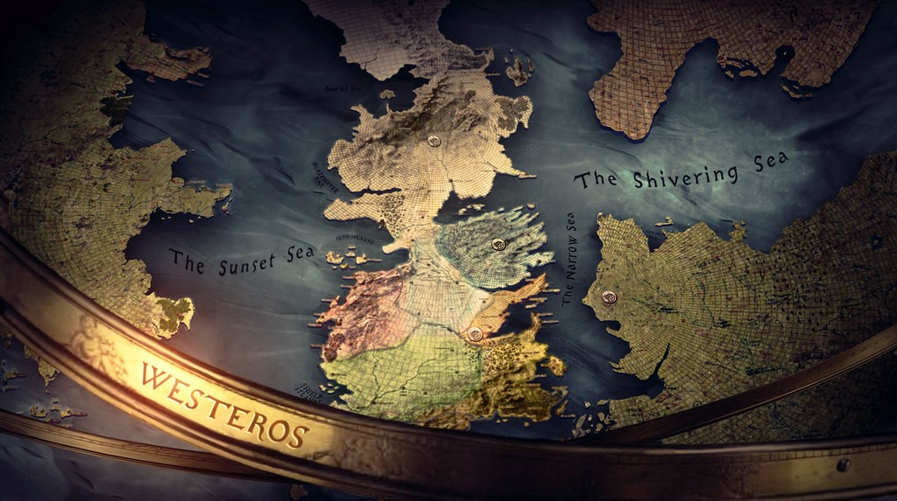

Welcome to the World of Game of Thrones!
Game of Thrones is a fascinating journey into the depths of humanity, set in a world where summers span decades and winter can last a lifetime. This epic fantasy series, based on the bestselling books by George R.R. Martin, has captured the hearts of millions worldwide.
THE SHOW
Game of Thrones first premiered on HBO in 2011 and ran for a total of eight seasons, concluding in 2019. The series is known for its complex characters and character arcs, intricate political plots, and stunning visual effects. It has won numerous awards and has been praised for its production value, storytelling, and intricate characters.
THE WORLD
The series takes place in the fictional continents of Westeros and Essos, with a long history stretching thousands of years. Westeros is divided into several regions, each ruled by a noble family, while Essos is home to ancient cities and nomadic tribes. The series’ rich lore and massive world-building are part of what makes it so engaging.
CHARACTERS
Game of Thrones boasts a vast ensemble cast from noble families, praised messiahs, exiled outcasts, and everyone in between. Some fan-favorite characters include Daenerys Targaryen, the exiled princess turned powerful queen; Jon Snow, the honorable warrior with a mysterious past; and many others.